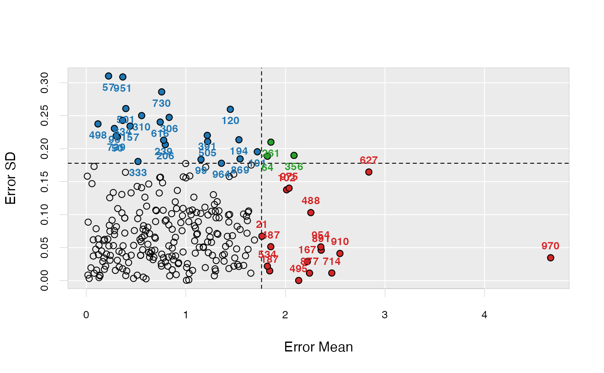
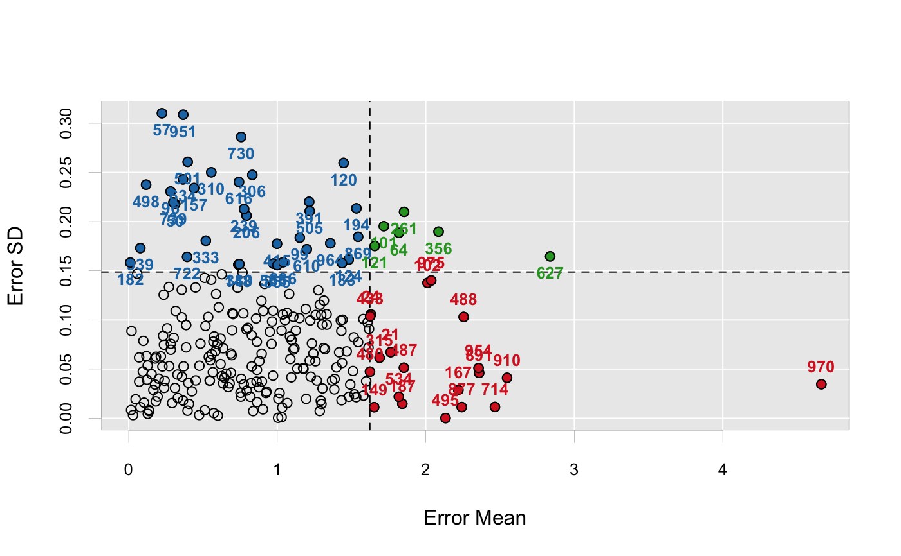

Outlier detection with ensemble sparse partial least squares.
enspls.od(x, y, maxcomp = 5L, cvfolds = 5L, alpha = seq(0.2, 0.8, 0.2), reptimes = 500L, method = c("mc", "boot"), ratio = 0.8, parallel = 1L)
| x | Predictor matrix. |
|---|---|
| y | Response vector. |
| maxcomp | Maximum number of components included within each model.
If not specified, will use |
| cvfolds | Number of cross-validation folds used in each model
for automatic parameter selection, default is |
| alpha | Parameter (grid) controlling sparsity of the model.
If not specified, default is |
| reptimes | Number of models to build with Monte-Carlo resampling or bootstrapping. |
| method | Resampling method. |
| ratio | Sampling ratio used when |
| parallel | Integer. Number of CPU cores to use.
Default is |
A list containing four components:
error.mean - error mean for all samples (absolute value)
error.median - error median for all samples
error.sd - error sd for all samples
predict.error.matrix - the original prediction error matrix
To maximize the probablity that each observation can
be selected in the test set (thus the prediction uncertainty
can be measured), please try setting a large reptimes.
See enspls.fs for measuring feature importance
with ensemble sparse partial least squares regressions.
See enspls.fit for fitting ensemble sparse
partial least squares regression models.
data("logd1k") x = logd1k$x y = logd1k$y set.seed(42) od = enspls.od( x, y, reptimes = 5, maxcomp = 3, alpha = c(0.3, 0.6, 0.9)) plot(od, prob = 0.1)plot(od, criterion = "sd", sdtimes = 1)